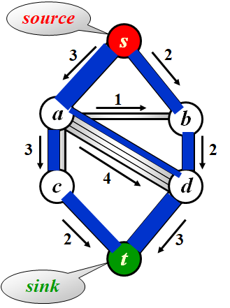
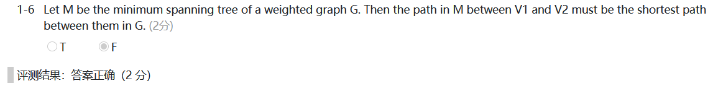

WEEK 10
6.5 Network Flow Problems

- Determine the maximum amount of flow that can pass from $s$ to $t$.
Note : Total coming in ($v$) = Total going out ($v$) where $v \notin { s, t }$
A Simple Algorithm
- 流图$G_f$表示算法的任意阶段已经达到的流，开始时$G_f$的所有边都没有流，算法终止时$G_f$包含最大流
- 残余图(residual graph)$G_r$表示对于每条边还能添加上多少流，$G_r$的边叫做残余边(residual edge)
Step 1 : Find any path from $s$ to $t$ in $G_r$ , which is called augmenting path(增长通路).
Step 2 : Take the minimum edge on this path as the amount of flow and add to $G_f$.
Step 3 : Update $G_r$ and remove the 0 flow edges.
Step 4 : If there is a path from $s$ to $t$ in $G_r$ then go to Step 1, or end the algorithm.
- Step 1中初始选择的路径可能使算法不能找到最优解，贪心算法行不通
A solution
- allow the algorithm to undo its decisions
- For each edge $( v, w )$ with flow $f_{v, w}$ in $G_f$, add an edge $( w, v )$ with flow $f_{v, w}$ in $G_r$ .
Note : The algorithm works for $G$ with cycles as well.
[Proposition] If the edge capabilities are rational numbers, this algorithm always terminate with a maximum flow.
Analysis
-
An augmenting path can be found by an unweighted shortest path algorithm.
-
$T=O(f|E|)$ where $f$ is the maximum flow.
-
Always choose the augmenting path that allows the largest increase in flow
-
对Dijkstra算法进行单线(single-line)修改来寻找增长通路
- $cap_{max}$为最大边容量
- $O(|E|\log cap_{max})$条增长通路将足以找到最大流，对于增长通路的每次计算需要$O(|E|\log|V|)$时间
$$ T=T_{augmentation}\times T_{find_a_path}\ =O(|E|\log cap_{max})\times O(|E|\log|V|)\ =O(|E|^2\log|V|\log cap_{max}) $$
-
Always choose the augmenting path that has the least number of edges
-
使用无权最短路算法来寻找增长路径
$$ T=T_{augmentation}\times T_{find_a_path}\ =O(|E||V|)\times O(|E|)\ =O(|E|^2|V|) $$
Note :
- If every $v \notin { s, t }$ has either a single incoming edge of capacity 1 or a single outgoing edge of capacity 1, then time bound is reduced to $O( |E| |V|^{1/2} )$.
- The min-cost flow problem is to find, among all maximum flows, the one flow of minimum cost provided that each edge has a cost per unit of flow.
6.6 Minimum Spanning Tree
[Definition] A spanning tree of a graph $G$ is a tree which consists of $V(G)$ and a subset of $E(G)$
Note :
- The minimum spanning tree is a tree since it is acyclic, the number of edges is $|V|-1$
- It is minimum for the total cost of edges is minimized.
- It is spanning because it covers every vertex.
- A minimum spanning tree exists if $G$ is connected.
- Adding a non-tree edge to a spanning tree, we obtain a cycle.
Greedy Method
Make the best decision for each stage, under the following constrains :
- we must use only edges within the graph
- we must use exactly $|V|-1$ edges
- we may not use edges that would produce a cycle
-
Prim’s Algorithm
-
在算法的任一时刻，都可以看到一个已经添加到树上的顶点集，而其余顶点尚未加到这棵树中
-
算法在每一阶段都可以通过选择边$(u, v)$，使得$(u,v)$的值是所有$u$ 在树上但$v$不在树上的边的值中的最小者，而找出一个新的顶点并把它添加到这棵树中
-
Kruskal’s Algorithm
-
连续地按照最小的权选择边,，并且当所选的边不产生环时就把它作为取定的边
void Kruskal( Graph G ) { T = { }; while ( T contains less than |V|-1 edges && E is not empty ) { choose a least cost edge (v, w) from E; /*DeleteMin*/ delete (v, w) from E; if ( (v, w) does not create a cycle in T ) add (v, w) to T; /*Union/Find*/ else discard (v, w); } if ( T contains fewer than |V|-1 edges ) Error( “No spanning tree” ); }void Kruskal(Graph G) { int EdgesAccepted; DisjSet S; PriorityQueue H; Vertex U, V; SetType Uset, Vset; Edge E; Initialize(S); ReadGraphIntoHeapArray(G, H); BuildHeap(H); EdgesAccepted = 0; while(EdgesAccepted < NumVertex-1) { E = DeleteMin(H); /*E = (U,V)*/ Uset = Find(U, S); Vset = Find(V, S); if(Uset != Vset) { /*Accept the edge*/ EdgesAccepted++; SetUnion(S, USet, VSet); } } }$$ T=O(|E|\log|E|) $$
